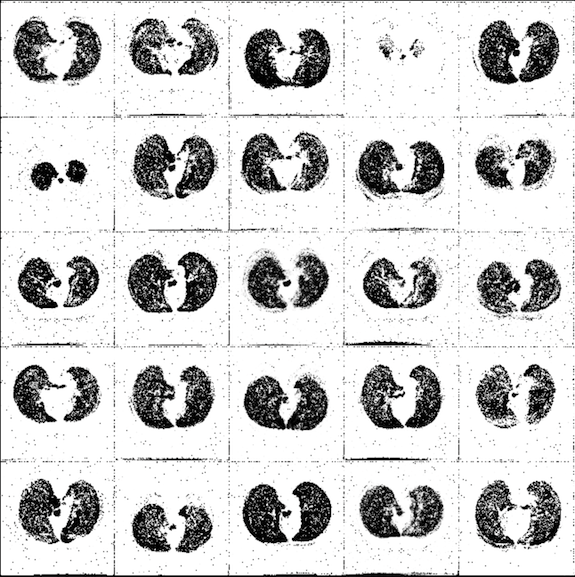
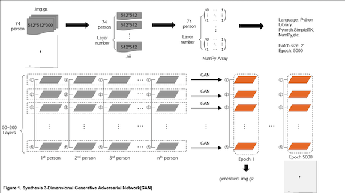
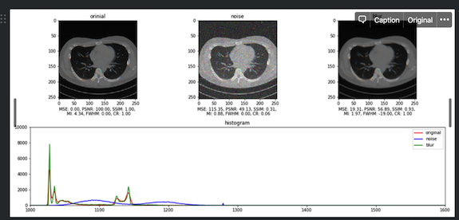
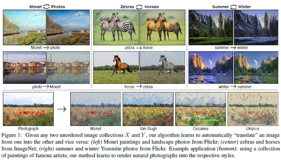
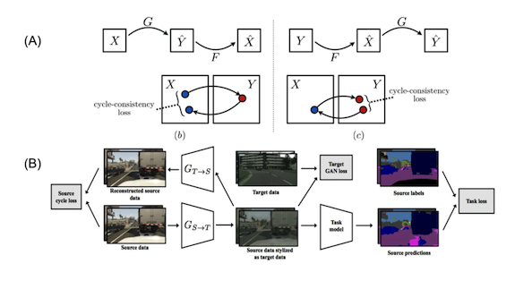

Deep Learning and Artificial Intelligence
Tensorflow
Generative Adversirial Network
Pytorch 라이브러리를 이용한 적대적신경망(GAN) 구현 및 lung CT 이미지 생성
Details
Used Technologies: Deep learning, Python, GAN, Medical Image processing, etc.
3D GAN기법을 이용한 3DCT or 4DCT에 최적화된 3D lung CT 이미지 생성 및 reconstruction.
Used Technologies: Deep learning, Python, GAN, Medical Image processing, etc.
Super-Resolution GAN
Super-Resolution GAN 기법을 통한 저선량 CT로부터 고선량 수준의 CT 생성 연구
Used Technologies: Deep learning, Python, GAN, Medical Image processing, etc.


Cycle GAN
Cycle GAN 기법을 활용한 TLC, FRC CT 이미지간의 상호작용 학습 및 reconstruction.
Used Technologies: Deep learning, Python, GAN, Medical Image processing, etc.

Seminar
Machine Learning and Deep Learning
Under the theme of "Understanding Machine Learning and Deep Learning," we invited Professor Chang-ha, Hwang(Dankook University, Department of Applied Statistics)
January 28-29 at Kyungpook National University's statistics department for two nights.
We would like to invite you to participate in the workshop as follows.
This workshop is organized by the The Korea Data Information Science Society and sponsored by the Department of Statistics at Kyungpook National University.